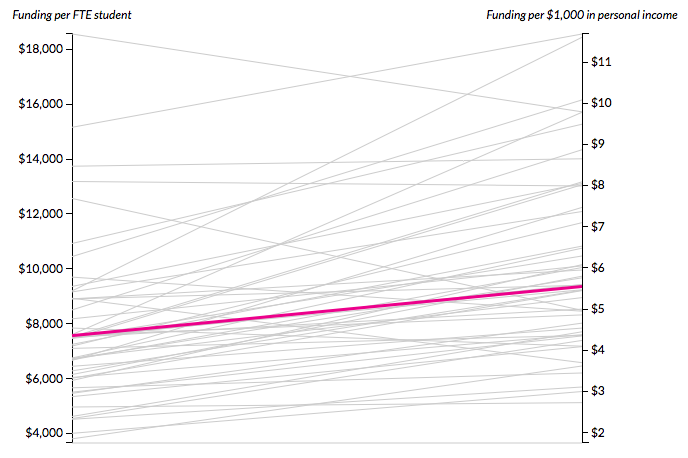

Funding
Variation in tuition and fees and in enrollment across states is tightly intertwined with variation in state funding for higher education. Nationally, funding has declined on a per student basis since the Great Recession as a result of both state funding cuts and rising enrollment. Enrollment trends have played a stronger role in some states, but changes in overall funding are behind the most extreme changes in funding per student. Greater funding declines are associated with steeper price increases in some states’ public institutions, but this correlation across states is far from perfect.
Note: In this section, we refer to state funding, which is allocated by state fiscal year, as applying to the fall of the academic year contained within the fiscal year. For example, state funding for state fiscal year 2014–15 applies to the academic year beginning fall 2014.
Funding per Student versus Funding per $1,000 in Personal Income, Fall 2014
Funding per full-time equivalent (FTE) student varies widely across states (left axis). Some of this difference is attributable to differences in state wealth and in costs of living. Focusing on funding per $1,000 in average personal income in the state (right axis) accounts for some of the differences in available resources that affect the effort required to fund higher education.
In very high income states (such as Connecticut, New Jersey, and New York), lower-than-average funding relative to personal income, or low funding effort, yields higher-than-average per student funding. In lower-income states (such as Mississippi, Texas, and West Virginia), above-average funding per $1,000 in personal income, or high funding effort, yields below-average funding per student.
Funding per FTE student:
Funding per $1,000 in personal income:
Funding per $1,000 in personal income:
Funding per FTE student, fall 2014

Sources: Illinois State University, Grapevine, 2015, Table 4; NCES, Digest of Education Statistics, 2014, Table 307.10 and Table 307.20.
Notes: Fall 2014 FTE student enrollment estimates are based on fall 2013 enrollment by state, updated with the NCES predicted increase of 0.03 percent for the nation as a whole; Personal income data are for the second quarter of 2014.
Data: Fund.Income tab.
Notes: Fall 2014 FTE student enrollment estimates are based on fall 2013 enrollment by state, updated with the NCES predicted increase of 0.03 percent for the nation as a whole; Personal income data are for the second quarter of 2014.
Data: Fund.Income tab.
State Grant Aid to Undergraduate Students: Need Based versus Non-Need Based, Fall 2013
State funding for higher education includes funding for student financial aid and funding for school operations. Some states have generous grant programs, effectively lowering tuition for recipients at in-state institutions. Other states are almost exclusively focused on funding operating budgets, which reduces the tuition that institutions must charge to cover ongoing costs.
Among states where individual student aid is a large share of postsecondary education funding, some direct their grant aid toward students with a limited ability to pay, and others subsidize students with strong academic credentials. In 7 of the 10 most generous states, less than half the aid is distributed based on financial need. New Jersey, New York, and Washington have particularly generous need-based programs.
Need based:
Non-need based:
Non-need based:
Share of state grant aid that is need based
More Need Based

More Non-Need Based
Source: National Association of State Student Grant and Aid Programs, 2015, 45th Annual Survey, Table 12.
Note: New Hampshire does not give grant aid.
Data: Fund.GrantAid tab.
Note: New Hampshire does not give grant aid.
Data: Fund.GrantAid tab.
Percentage Change in Total Funding since Fall 2000
For the nation as a whole, total funding was about the same in fall 2014 as in fall 2000, after adjusting for inflation. But funding increased in 23 states and decreased in the rest over this 14-year period. The largest decline in funding—in both percentage and dollar terms—was in fall 2011, when 44 states decreased their funding.
Unpredictable fluctuations from year to year exacerbate the funding challenges public colleges face. For example, California cut funding 15 percent in fall 2009 and 19 percent in fall 2011, but raised it 10 percent in both fall 2010 and 2014. Eleven other states had similar double-digit increases and decreases over the same period. Other states, such as New Jersey and Maine, avoided such fluctuations. Changes in overall funding are behind the most extreme changes in funding per student.
Total funding, fall 2014:
Change since fall 2000:
Change since fall 2000:
Change in total funding since fall 2000
Source: Illinois State University, Grapevine, various publication years for fall 2000 through fall 2014 data.
Note: The chart reports state fiscal year (SFY) funding by the fall of the corresponding academic year (e.g., funding for SFY 2014–15 applies to Fall ‘14).
Data: Fund.TotalChange tab.
Note: The chart reports state fiscal year (SFY) funding by the fall of the corresponding academic year (e.g., funding for SFY 2014–15 applies to Fall ‘14).
Data: Fund.TotalChange tab.
Funding per Student since Fall 2000, in 2015 Dollars
An overall steep decline of in-state funding per FTE student between fall 2000 and 2014 resulted from a large increase in enrollment combined with a small decline in total funding (in inflation-adjusted dollars). This overall trend, however, conceals considerable variation across states, with increases of over 30 percent in North Dakota and Wyoming and declines of over 50 percent in Michigan, Oregon, and Pennsylvania.
As with total funding, per student funding hit its low point for most states in fall 2011. Between fall 2011 and 2013, funding per student recovered some ground lost during the recession, increasing 6 percent nationwide. In some states, such as Illinois and North Dakota, the recovery has been dramatic, while in others, such as Louisiana and Rhode Island, funding per student has continued to fall.
Funding per FTE student, fall 2014:
Change since fall 2000:
Change since fall 2000:
Change in funding per FTE student since fall 2000
Sources: Illinois State University, Grapevine, various publication years for fall 2000 through fall 2014 data; NCES, Digest of Education Statistics, various publication years for fall 2000 through fall 2013 data; NCES, Digest of Education Statistics, 2014, 307.10.
Notes: The chart reports SFY funding by the fall of the corresponding academic year (e.g., funding for SFY 2014-15 applies to Fall ‘14); Fall 2014 FTE student enrollment estimates are based on fall 2013 enrollment by state, updated with the NCES predicted increase of 0.03 percent for the nation as a whole.
Data: Fund.PerStudent tab.
Notes: The chart reports SFY funding by the fall of the corresponding academic year (e.g., funding for SFY 2014-15 applies to Fall ‘14); Fall 2014 FTE student enrollment estimates are based on fall 2013 enrollment by state, updated with the NCES predicted increase of 0.03 percent for the nation as a whole.
Data: Fund.PerStudent tab.